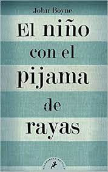

Sinopsis

Bruno, de ocho años, es el hijo mimado de un oficial nazi. Al ascender a su padre, la familia se ve obligada a abandonar su confortable casa de Berlín y trasladarse a una zona aislada donde el solitario chico no tiene nada que hacer ni nadie con quien jugar. Muerto de aburrimiento y atraído por la curiosidad, Bruno hace caso omiso a lo que su madre le dice. No debe ir más allá del jardín bajo ninguna circunstancia. Pero el no le hace caso y se dirige hacia la "granja" que ha vislumbrado en la distancia. Allí conoce a Shmuel, un chico de su edad que vive una extraña y paralela existencia al otro lado de una alambrada. El encuentro de Bruno con el chico del pijama de rayas le lleva a adentrarse de la forma más inocente en el mundo de adultos que les rodea. Entabla una amistad con Shmuel con terribles consecuencias.
Sobre el Autor
John Boyne nació en 1971 en Dublín, Irlanda. Se formó en el Trinity College y en la Universidad de East Anglia, en Norwich. Entre las novelas que ha publicado destaca El niño con el pijama de rayas, que se ha traducido a más de cuarenta idiomas y de la que se han vendido más de cinco millones de ejemplares. Ganadora de dos Irish Book Awards y finalista del British Book Award, fue llevada al cine en 2008. En España fue galardonada con el Premio de los Lectores 2007 de la revista Qué Leer y permaneció más de un año en las listas de libros más vendidos. John Boyne es asimismo el aclamado autor de Motín en la Bounty, La casa del propósito especial, La apuesta, El ladrón de tiempo, En el corazón del bosque, El pacifista y El secreto de Gaudlin Hall.